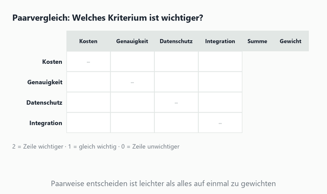
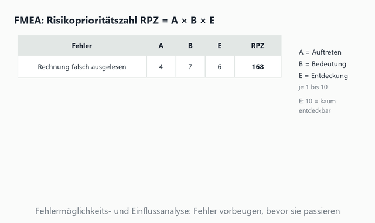

Lohnt sich das KI-Projekt? Welcher Anbieter passt am besten? Selbst entwickeln oder kaufen? In diesem Modul lernen Sie die Verfahren, mit denen solche Fragen nachvollziehbar beantwortet werden: Kosten-Nutzen-Analyse mit vollständigen Kosten (TCO), Nutzwertanalyse mit Paarvergleich, Kosten-Wirksamkeit, ROI und Amortisation, FMEA für die Qualität, Sensitivitäts- und Szenarioanalyse sowie Entscheidungsbäume. Und Sie lernen, Ergebnisse so aufzubereiten, dass Entscheider ihnen vertrauen.
15 Lektionen in 3 Teilen7 Animationen2 Rechner12 Übungen mit Antwortfeldern20 QuizfragenRechtsvorschrift § 7 Nr. 1
Im Alltag – vertrautes Bild als Einstieg
Fachlich – genaue Erklärung
Prüfungstipp – so wird es abgefragt
Falle – hier verlieren viele Punkte
Lektion 1 · 20 Minuten
Entscheiden unter Unsicherheit: Ziele, Alternativen, Kriterien
Im Alltag
Beim Autokauf vergleicht man nicht nur den Preis, sondern Verbrauch, Platz, Sicherheit und Wiederverkaufswert – und man weiß nicht genau, wie sich der Spritpreis entwickelt.
Fachlich
Ein Entscheidungsproblem besteht aus Zielen, Alternativen (auch „nichts tun“), Kriterien zur Bewertung, Umweltzuständen (unsichere Einflüsse wie Datenqualität oder Nutzungsmenge) und Ergebnissen. Entscheidungen unter Risiko kennen Wahrscheinlichkeiten, unter Ungewissheit nicht.
Problem und Ziel klären (Was soll besser werden? Woran messen wir es?)
Alternativen sammeln, darunter die Nullvariante (Status quo)
Muss-Kriterien (K.-o.) und Soll-Kriterien festlegen
Nettonutzen über 0 bzw. Verhältnis über 1: Das Vorhaben lohnt sich.
Einsatz
Wenn sich Kosten und Nutzen weitgehend in Geld ausdrücken lassen: Automatisierung mit messbarer Zeitersparnis, Reduktion von Ausschuss, Vermeidung von Strafen.
Grenzen
Nicht alles ist sinnvoll in Euro messbar (Mitarbeiterzufriedenheit, Image, Fairness). Wer es trotzdem tut, erzeugt Scheingenauigkeit. Dann ergänzen: Nutzwertanalyse oder qualitative Bewertung.
Beispiel: Kosten über 3 Jahre 170.000 €, Nutzen 330.000 € → Nettonutzen 160.000 €, Verhältnis 330 / 170 ≈ 1,94.
Merksatz
Kosten-Nutzen-Analyse: alles in Geld, Nettonutzen und Verhältnis. Stark bei messbaren Effekten, schwach bei weichen Faktoren.
Lizenzen, API- bzw. Token-Kosten, Rechenleistung, Betrieb, Monitoring, Support, Neutraining
versteckt
Zeit der Fachabteilung, Nacharbeit bei Fehlern, Compliance (DSFA, Dokumentation nach KI-Verordnung), Change Management, Ausstieg und Datenmigration
Merksatz
Total Cost of Ownership = alle Kosten über die gesamte Nutzungsdauer, nicht nur der Angebotspreis.
Falle
Nutzungsabhängige Kosten (Tokens, Rechenzeit) wachsen mit dem Erfolg. Was im Pilot mit 1.000 Anfragen billig ist, kann bei 1 Mio. Anfragen teuer werden – Mengen für den Rollout hochrechnen.
Beispiel Zeitersparnis: 20.000 Rechnungen im Jahr, je 10 Minuten weniger Bearbeitung, 45 € je Stunde Vollkosten → 20.000 × 10 / 60 = 3.333 h × 45 € ≈ 150.000 €.
Merksatz
Nutzen erst in Kennzahlen fassen, dann so weit wie seriös möglich in Euro umrechnen, den Rest qualitativ bewerten.
Falle
Eingesparte Zeit ist nur dann Geld, wenn sie genutzt wird – für andere Aufgaben, Wachstum ohne Neueinstellung oder Abbau von Überstunden. Sonst ist der Nutzen nur auf dem Papier.
Lektion 5 · 25 Minuten
Verfahren im Vergleich: Kostenvergleich, Kosten-Wirksamkeit, Nutzwertanalyse
Verfahren
Wann?
Ergebnis
Kostenvergleich
Alternativen mit gleichem Nutzen
günstigste Alternative
Kosten-Nutzen-Analyse
Kosten und Nutzen in Euro messbar
Nettonutzen, Nutzen-Kosten-Verhältnis
Kosten-Wirksamkeits-Analyse
Nutzen messbar, aber nicht in Euro (z. B. vermiedene Fehler)
Kosten je Einheit Wirkung
Nutzwertanalyse
mehrere, auch qualitative Kriterien
Nutzwert je Alternative
Investitionsrechnung
Zahlungen über mehrere Jahre
ROI, Amortisation, Kapitalwert (Modul 14)
Kosten-Wirksamkeit: Lösung A kostet 50.000 € und vermeidet 500 Fehlbuchungen, Lösung B 80.000 € und vermeidet 1.000. A: 100 € je Fehler · B: 80 € je Fehler → B ist wirksamer je Euro, kostet aber absolut mehr.
Merksatz
Das Verfahren folgt aus der Frage: Gleicher Nutzen → Kostenvergleich; alles in Euro → Kosten-Nutzen; Wirkung ohne Euro → Kosten-Wirksamkeit; viele weiche Kriterien → Nutzwertanalyse.
Lektion 6 · 40 Minuten
Nutzwertanalyse Schritt für Schritt
Teilnutzen addieren sich zum Nutzwert.
K.-o.-Kriterien prüfen: Alternativen, die Muss-Anforderungen nicht erfüllen (z. B. DSGVO-konformer Betrieb), scheiden vorher aus.
Kriterien festlegen: unabhängig voneinander, messbar oder klar beschreibbar.
Gewichten: Summe 100 % (z. B. per Paarvergleich, Lektion 7).
Bewerten: je Alternative und Kriterium Punkte (z. B. 1–10) nach vorher festgelegter Skala.
Teilnutzen = Gewicht × Punkte; Nutzwert = Summe der Teilnutzen.
Kriterien, die dasselbe messen (z. B. „Genauigkeit“ und „Trefferquote“), werden doppelt gezählt und verzerren das Ergebnis.
Lektion 7 · 25 Minuten
Kriterien gewichten: Paarvergleich

Zeilensumme durch Gesamtsumme = Gewicht.
Jedes Kriterium wird mit jedem anderen verglichen: 2 = wichtiger, 1 = gleich wichtig, 0 = unwichtiger. Gegenüberliegende Felder ergänzen sich zu 2. Gesamtpunkte = n · (n − 1). Gewicht = Zeilensumme / Gesamtpunkte.
Schwäche: Ein Kriterium, das jeden Vergleich verliert, erhält 0 % – obwohl es vielleicht dennoch wichtig ist. Abhilfe: es streichen oder jeder Zeile einen Grundpunkt geben. Alternativen: Direktgewichtung, Punkteverteilung im Team (z. B. 100 Punkte je Person).
Merksatz
Paarvergleich: paarweise entscheiden, Zeilensummen bilden, durch n · (n − 1) teilen.
Lektion 8 · 30 Minuten
Return on Investment und Amortisation als Entscheidungshilfe
Statische Amortisation.
Formeln (statisch)
jährlicher Rückfluss = Einsparung bzw. Mehrerlös − laufende Kosten
Amortisation = Investition / jährlicher Rückfluss; je kürzer, desto geringer das Risiko. ROI zeigt die Rendite über die Laufzeit.
Falle
Die Amortisationszeit sagt nichts über die Zeit danach. Ein Projekt mit 2 Jahren Amortisation und 3 Jahren Nutzung kann schlechter sein als eines mit 3 Jahren Amortisation und 8 Jahren Nutzung.
Lektion 9 · 30 Minuten
Make or Buy: selbst entwickeln, kaufen, mieten
Selbst entwickeln (Make)
Kaufen / Mieten (Buy, SaaS, API)
Vorteile
passgenau, eigenes Know-how, Daten bleiben im Haus, Wettbewerbsvorteil
schnell verfügbar, erprobt, geringe Anfangsinvestition, Anbieter pflegt weiter
Nachteile
teuer, langsamer, Fachkräfte nötig, Risiko des Scheiterns
Abhängigkeit (Lock-in), weniger Anpassung, Datenschutzfragen, laufende Kosten wachsen mit der Nutzung
Passt, wenn
Kernkompetenz, eigene Daten sind der Vorteil, hohe Mengen
Standardaufgabe, geringe Mengen, schneller Start
Break-even der Menge: API kostet 0,02 € je Anfrage; eigener Betrieb 30.000 € fix je Jahr plus 0,005 € je Anfrage. 30.000 / (0,02 − 0,005) = 2.000.000 Anfragen pro Jahr. Darunter ist die API günstiger, darüber der eigene Betrieb – Personal, Risiko und Flexibilität noch nicht eingerechnet.
Merksatz
Make or Buy ist eine Frage von Kosten und Strategie: Standard kaufen, Differenzierendes selbst machen; Mengen und Abhängigkeit mitbewerten.
Lektion 10 · 35 Minuten
Qualitätsanalysen: Qualitätskennzahlen und FMEA
Qualitätskennzahlen
Fehlerquote, Erstlösungsquote, Genauigkeit, Recall und Präzision des Modells, Kundenzufriedenheit, Reklamationsquote. Qualitätskosten: Fehlerverhütung (Schulung, Tests), Prüfung (Stichproben, Monitoring), Fehlerkosten intern (Nacharbeit) und extern (Reklamation, Imageschaden, Haftung).
FMEA
Die Fehlermöglichkeits- und Einflussanalyse sucht vorbeugend mögliche Fehler, ihre Folgen und Ursachen. Jeder Fehler wird mit 1–10 bewertet nach Auftreten (A), Bedeutung (B) und Entdeckung (E; 10 = kaum entdeckbar). RPZ = A × B × E.

Höchste RPZ zuerst – hohe Bedeutung immer.
Merksatz
FMEA: RPZ = Auftreten × Bedeutung × Entdeckung; Maßnahmen nach RPZ und für alle Fehler mit sehr hoher Bedeutung.
Falle
Eine niedrige RPZ kann einen katastrophalen, aber seltenen Fehler verstecken (B = 10, A = 1, E = 2 → RPZ 20). Deshalb Fehler mit Bedeutung 9–10 immer gesondert betrachten.
Lektion 11 · 30 Minuten
Sensitivitätsanalyse: Was, wenn sich Annahmen ändern?
Kritischer Wert: Hier kippt die Entscheidung.
Die Sensitivitätsanalyse verändert eine unsichere Annahme (Gewicht, Mengen, Preis je Token, Einsparung) und beobachtet das Ergebnis. Der kritische Wert ist der Wert, bei dem sich die Empfehlung umkehrt. Liegt er weit vom angenommenen Wert entfernt, ist das Ergebnis robust.
Beispiel Amortisation: Investition 60.000 €, Ziel Amortisation in höchstens 3 Jahren → kritischer Rückfluss = 60.000 / 3 = 20.000 € je Jahr. Bei angenommenen 24.000 € darf der Rückfluss also um höchstens rund 17 % sinken.
„Wozu dient eine Sensitivitätsanalyse?“ – Prüfen, wie stark das Ergebnis von unsicheren Annahmen abhängt und ab welchem Wert sich die Empfehlung ändert.
Lektion 12 · 25 Minuten
Szenarien: Best Case, Base Case, Worst Case
Szenario
Annahmen
Rückfluss je Jahr
Amortisation
Best Case
hohe Nutzung, Modell sehr genau, günstige Tokenpreise
40.000 €
1,5 Jahre
Base Case
realistische Planwerte
24.000 €
2,5 Jahre
Worst Case
geringe Akzeptanz, viel Nacharbeit, höhere Kosten
10.000 €
6 Jahre
Anders als bei der Sensitivitätsanalyse werden mehrere Annahmen gemeinsam stimmig verändert. Investition jeweils 60.000 €. Entscheider sehen so die Bandbreite – und ob sie auch den Worst Case tragen können.
Merksatz
Szenarien zeigen die Bandbreite. Entscheidend ist oft die Frage: Können wir mit dem Worst Case leben?
Lektion 13 · 30 Minuten
Entscheidungsbaum und Erwartungswert
Kauf: höherer Erwartungswert, kleineres Risiko.
Formel
Erwartungswert EW = Σ Wahrscheinlichkeit × Ergebnis
Quadrate sind Entscheidungen, Kreise Zufallsereignisse, Dreiecke Ergebnisse. Man rechnet von rechts nach links: Erwartungswerte an den Zufallsknoten, dann die beste Alternative am Entscheidungsknoten. Neben dem Erwartungswert zählt die Risikoeinstellung: Wer einen Verlust von 100 T€ nicht verkraften kann, wählt die sichere Alternative auch bei gleichem Erwartungswert.
Merksatz
Erwartungswert = Σ p × Ergebnis; zusätzlich Bandbreite und Risikotragfähigkeit beachten.
Einsparung aus dem Vertriebsfoliensatz des Anbieters
eigene Messung im Pilot, Worst Case
Rechtfertigung im Nachhinein
Gewichte so lange ändern, bis der Favorit gewinnt
Gewichte vor der Bewertung festlegen
Doppelzählung
ähnliche Kriterien zweimal
Kriterien auf Unabhängigkeit prüfen
Status quo vergessen
nur KI-Varianten verglichen
Nullvariante immer mitbewerten
Merksatz
Ehrliche Abwägung: Gewichte vorab festlegen, alle Kosten erfassen, Nutzen im Pilot messen, Unsicherheit offen zeigen.
Übungen · 120 Minuten
Übungen mit Musterlösung
Tragen Sie Ihre Antworten in die Felder ein. Die Rechner in Lektion 6 und 8 helfen beim Nachrechnen.
Aufgabe 1: Kostenarten
4 Punkte
Einmalig oder laufend? 1. Integration in das ERP-System. 2. API-Gebühren je Anfrage. 3. Neutraining des Modells alle sechs Monate. 4. Erstschulung der Beschäftigten.
Ein KI-Assistent spart bei 15.000 Anfragen im Jahr je 6 Minuten. Die Vollkosten betragen 40 € je Stunde. Wie hoch ist der jährliche Nutzen (wenn die Zeit sinnvoll genutzt wird)?
Drei Kriterien X, Y, Z. Ergebnisse (2 = Zeile wichtiger): X gegen Y: 2, X gegen Z: 1, Y gegen Z: 0. Berechnen Sie die Gewichte von X und Z. Welches Problem zeigt sich bei Y?
Lösung anzeigen
Zeilensummen: X = 2 + 1 = 3, Y = 0 + 0 = 0, Z = 1 + 2 = 3; Gesamt 3 · 2 = 6. Gewicht X = 50 % (1 P.), Z = 50 % (1 P.). Y erhält 0 % und fällt aus der Bewertung – streichen oder Grundpunkt je Zeile vergeben (1 P.).
Aufgabe 6: Kosten-Wirksamkeit
3 Punkte
Lösung A kostet 50.000 € und vermeidet 500 Fehlbuchungen im Jahr, Lösung B kostet 80.000 € und vermeidet 1.000. Berechnen Sie die Kosten je vermiedenem Fehler. Welche Lösung ist wirksamer je Euro?
Lösung anzeigen
A: 100 € (1 P.) · B: 80 € (1 P.) · B (1 P.), sofern das Budget reicht.
Aufgabe 7: ROI und Amortisation
3 Punkte
Investition 80.000 €, jährliche Einsparung 45.000 €, laufende Kosten 13.000 € je Jahr, Nutzungsdauer 4 Jahre. Berechnen Sie den jährlichen Rückfluss, die Amortisationszeit und den ROI über 4 Jahre.
Eine KI-API kostet 0,02 € je Anfrage. Eigener Betrieb: 30.000 € fix im Jahr plus 0,005 € je Anfrage. a) Ab wie vielen Anfragen pro Jahr ist der eigene Betrieb günstiger? b) Was empfehlen Sie bei 500.000 Anfragen?
Lösung anzeigen
a) 30.000 / 0,015 = 2.000.000 Anfragen (2 P.) · b) API (Buy), da deutlich unter der Grenze (1 P.).
Aufgabe 9: FMEA
3 Punkte
Fehler 1: falsche Antwort des Chatbots (A 5, B 6, E 4). Fehler 2: Datenleck über den Chatbot (A 2, B 9, E 3). Fehler 3: Modell veraltet unbemerkt (A 3, B 5, E 9). Berechnen Sie die RPZ von Fehler 1 und 3. Welcher Fehler muss trotz niedriger RPZ unbedingt behandelt werden?
Investition 60.000 €. Jährlicher Rückfluss: Best Case 40.000 €, Base Case 24.000 €, Worst Case 10.000 €. Berechnen Sie jeweils die Amortisationszeit.
Lösung anzeigen
Best 1,5 Jahre · Base 2,5 Jahre · Worst 6 Jahre. Je 1 Punkt.
Aufgabe 11: Erwartungswert
3 Punkte
Alternative A: 70 % Chance auf + 200 T€, 30 % Risiko von − 50 T€. Alternative B: sicher + 110 T€. Berechnen Sie die Erwartungswerte. Welche Alternative hat den höheren Erwartungswert?
Die Muster Versicherung AG will eingehende Schadensmeldungen per KI auslesen. Zur Wahl stehen: A) SaaS-Lösung eines Anbieters, B) Eigenentwicklung mit offenem Modell im eigenen Rechenzentrum, C) Status quo. Beschreiben Sie, wie Sie zu einer begründeten Empfehlung kommen: Kriterien und K.-o.-Kriterien, Verfahren, Kosten (TCO) und Nutzen, Umgang mit Unsicherheit und Aufbau der Entscheidungsvorlage.
Lösung anzeigen
Kriterien (2 P.): K.-o.: DSGVO-konform (Gesundheitsdaten Art. 9!), Speicherort EU, Einhaltung der KI-Verordnung; Soll: Genauigkeit, Kosten, Integration, Abhängigkeit, Zeit bis Start, Skalierbarkeit. Verfahren (1 P.): Nutzwertanalyse mit Paarvergleich für die Auswahl, Investitionsrechnung (Amortisation, ROI) für die Wirtschaftlichkeit; Status quo als Vergleichsbasis. TCO und Nutzen (2 P.): einmalige, laufende und versteckte Kosten über 3–5 Jahre; Nutzen aus Zeitersparnis, schnellerer Regulierung, weniger Fehlern, in Euro und als Kennzahlen; Mengen hochrechnen (Make-or-Buy-Grenze). Unsicherheit (2 P.): Sensitivität für Menge und Genauigkeit, Szenarien Best/Base/Worst, Pilot zur Messung. Vorlage (1 P.): Empfehlung zuerst, Alternativen, Ergebnis, Annahmen, Risiken, Entscheidungsbedarf.
Abschlussquiz · 25 Minuten
Abschlussquiz Modul 13
20 Fragen im Stil der schriftlichen Prüfung, jeweils eine richtige Antwort. Ab 14 richtigen Antworten (70 %) sind Sie gut vorbereitet.
0 / 20
Zusammenfassung
Das Wichtigste auf einen Blick
Entscheidung
Ziel, Alternativen inkl. Status quo, K.-o.- und Soll-Kriterien.
Kosten-Nutzen
alles in Euro; Nettonutzen, Nutzen-Kosten-Verhältnis.
TCO
einmalig, laufend, versteckt über die gesamte Nutzung.
Nutzen
monetär, quantifizierbar, qualitativ; gesparte Zeit muss genutzt werden.